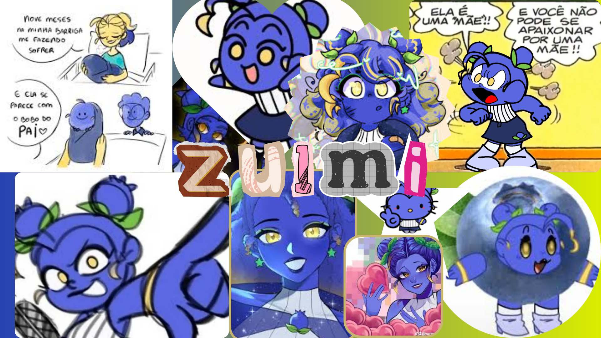

Zulmi
É uma personagem de Mundo Torajo dublado por Saberaa. A fruta da Zulmi é uma blueberry/mirtilo, ela tem pele azul e cabelo azul mas tem umas partes amarelas, olhos amarelos, saia azul escura com um mirtilo no canto, usa salto de cano alto da cor azul claro, meias brancas, blusa branca sem manga e com linhas, usa 2 pulseiras amarelas uma em cada pulso que foi presente da Agatha (mãe) ,faz coques com duas folhinhas verdes que o Polux (pai) deu pra ela. Zulmi, do universo "Mundo Torajo," é descrita como extrovertida, animada e carismática, muitas vezes chamada de "fofoqueira". Ela pode parecer ansiosa por tentar agradar a todos e, ao mesmo tempo, ser vista como uma "bad girl" arrogante em alguns aspectos, especialmente pelo seu estilo "bad girl", popular e com intenção de intimidar.